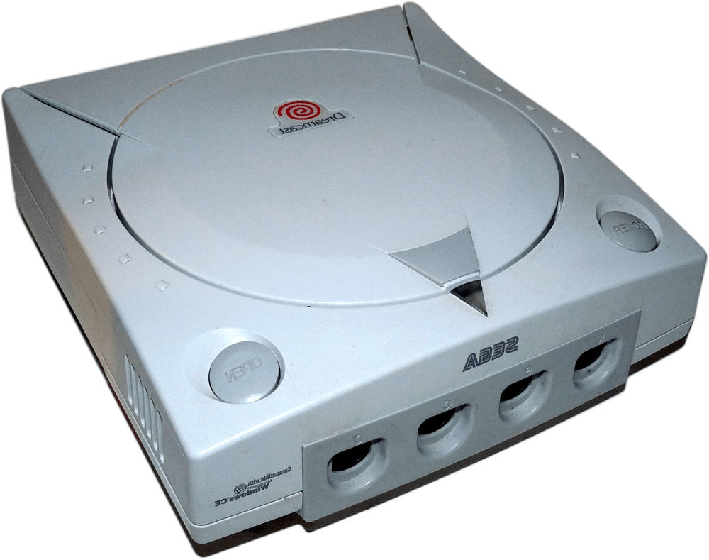

Sega
Dreamcast

Resumo
O Dreamcast é um console de jogos eletrônicos lançado pela Sega em 27 de novembro de 1998. Foi o primeiro da sexta geração de consoles, precedendo o PlayStation 2 da Sony, o GameCube da Nintendo e o Xbox da Microsoft. O Dreamcast foi o último console doméstico da Sega, marcando o fim dos 18 anos da empresa no mercado de consoles.
Jogos
O SEGA Dreamcast possui vários titulos memoráveis. Exemplos são: Jet Set Radio, Resident Evil - Code Veronica, Sonic Adventures, Project Justice, Skies of Arcadia, Shenmue, Samba de amigo, Marvel vs Capcom 2 e entre vários outros grandes títulos.